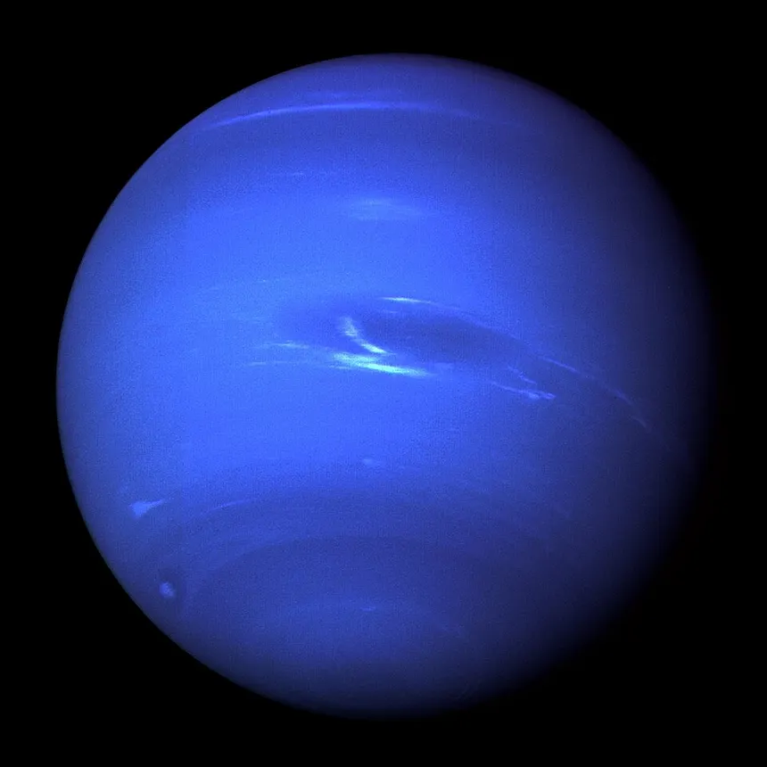

Neptune is the eighth and farthest known planet from the Sun. It is an ice giant and is similar in size and composition to Uranus. Neptune has a diameter of about 49,244 kilometers and is roughly four times wider than Earth. Because it is so far from the Sun, Neptune receives very little sunlight and is one of the coldest planetary environments in the Solar System.
Neptune has an atmosphere made primarily of hydrogen and helium, with methane contributing to its blue color. Despite receiving very little energy from the Sun, Neptune has some of the fastest winds in the Solar System. Winds can reach speeds of more than 2,000 kilometers per hour. The planet also experiences enormous storms that appear as dark spots in its atmosphere.
Neptune does not have a solid surface. Beneath its atmosphere is a dense interior containing water, ammonia, and methane under tremendous pressure. The planet likely has a rocky core surrounded by a thick layer of hot, dense material. Neptune's interior structure is very different from that of the rocky planets closer to the Sun.